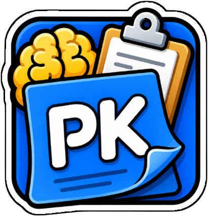
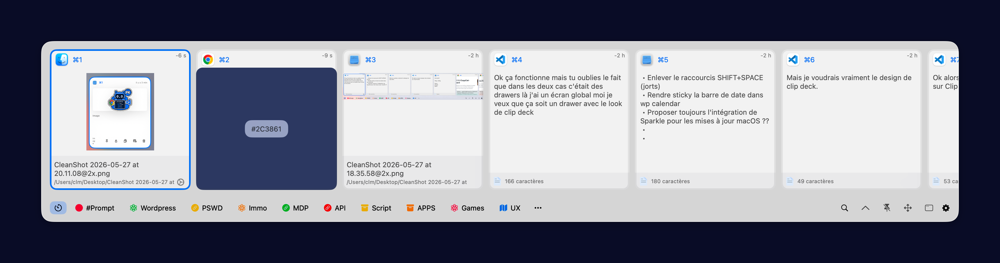
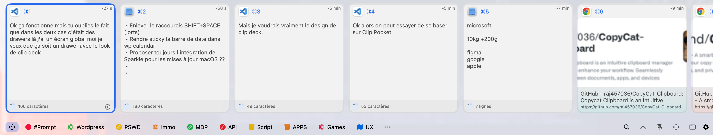

Notes qui savent calculer
Écrivez une expression dans votre note et voyez le résultat apparaître en direct. Gardez vos idées et vos chiffres ensemble.

PKbrainDes notes rapides, vos calculs et tout ce que vous copiez — réunis dans une app native, prête dès que vous en avez besoin.
Pour macOS · Gratuit · Open source

Maquette produittaxes = 15% * loyer → 180PKbrain met vos outils du quotidien à un raccourci clavier ou un clic de la barre des menus.
Écrivez une expression dans votre note et voyez le résultat apparaître en direct. Gardez vos idées et vos chiffres ensemble.
Retrouvez textes, liens, images, fichiers et couleurs copiés. Recherchez, épinglez et collez sans perdre votre place.
⌘K pour retrouver ou créer une note sans quitter le clavier.
Réglez les raccourcis et choisissez comment PKbrain s’intègre à votre bureau.
Vos notes restent des fichiers lisibles, avec historique et sauvegardes.
Maquettes de conception du tiroir PKbrain. L’interface évolue avec le projet.
Une vue compacte pour parcourir les éléments récents.

Une autre piste de présentation pour la collection du presse-papiers.
PKbrain est gratuit et son code est public. Téléchargez la dernière version ou explorez le projet sur GitHub.
PKbrain est gratuit. Votre don aide à faire vivre ce port macOS indépendant.